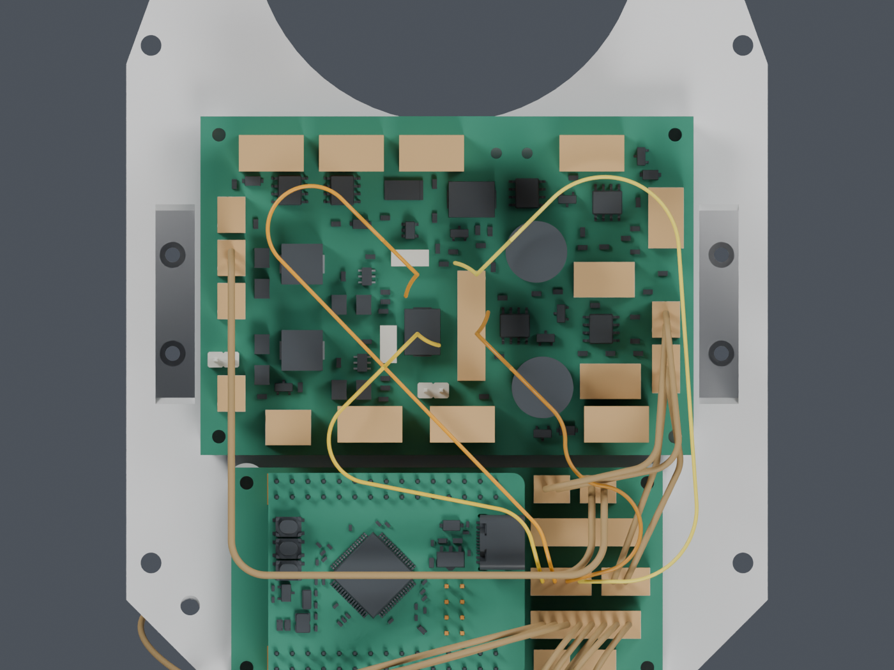
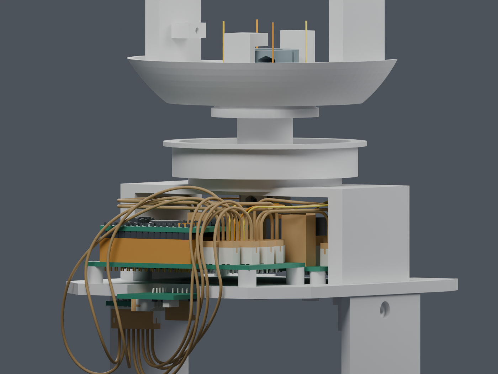

独立候选 · 主模型M1.47未改 · 尚未固定，也未接到CAM。完整线束仍为BLOCKED，不是加工图。
H06四根UART线已从Motion J5分配出线面接到偏航上方暂存点；四线成组、209源实体/代理、29个插头包络及14根静态线的130头部姿态检查通过，四线间隙保守下界0.738mm。与另外两组局部Yaw线束包络也通过。尚缺固定、穿线/带线拆装、俯仰段与CAM连接，J2打印改动未采用；主模型保持M1.47。

这一视图隐藏承重桥、转台和反力件；不同高度的线可能在图上交叉，三维间隙已独立检查。琥珀色为候选导线及插头包络。

| 已经检查 | 结果 |
|---|---|
| 4根线成组、全部6对间隙 | PASS |
| 209源实体/代理、29个对插包络、14根静态线 | 130个头部姿态；520个线/姿态实例PASS |
| 四线间隙保守下界 | 0.738mm |
| 与另外两组局部Yaw环 | 104项PASS；另外7根活动线尚未完整设计 |
上方竖直线段到Z206mm暂存点结束，俯仰段与CAM实际插头还没连接。这里的逐线长度只用于继续设计，未含端子内部、固定、拆装松量及剥线。
固定与应力释放、带线穿入/拆装、俯仰段和其余活动线、实际插头与热缩管、J2改动后的局部壁厚。两件打印结构的候选改动尚未请求正式应用。